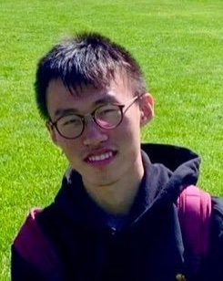

Yuejie Chi
Group
Group mini-golfing outing 2025/05, From left to right: Yuejie, Xingyu, He, Zixin, Harry, Tong, Sudeep, Jiin, Shicong, Lingjing and Timofey.
Current Members
Sudeep Salgia |
Pedro Valdeira, Ph.D. 2025 (co-advised with J. Xavier and C. Soares through CMU-Portugal program) |
Jiin Woo Hsu Chang Memorial Fellowship, 2023 |
Harry Dong Wei Shen and Xuehong Zhang Presidential Fellowship, 2024 NSF Graduate Research Fellowship Program Honorable Mention, 2023 Liang Ji-Dian Graduate Fellowship, 2023 Michel and Kathy Doreau Graduate Fellowship, 2023 |
Lingjing Kong |
|  | Zixin Wen |
He Wang Bob Lee Gregory Fellowship, 2023 |
Xingyu Xu Axel Berny Presidential Graduate Fellowship, 2024 |
Tong Yang Wei Shen and Xuehong Zhang Presidential Fellowship, 2025 |
Timofey Efimov NSF Graduate Research Fellowship, 2025 |
Former Members
PhD alumni
Shicong Cen, Ph.D. 2024 Dissertation: "Algorithmic Foundations of Policy Optimization in Reinforcement Learning, Multi-agent Systems and AI Alignment" Current: AI Resident at XTY Labs Selected Accomplishments:Rising Stars in Data Science, 2023 JP Morgan AI PhD Fellowship, 2023 Wei Shen and Xuehong Zhang Presidential Fellowship, 2021 and 2023 Nicholas Minnici Dean's Graduate Fellowship, 2022 INFORMS George Nicholson Student Paper Competition Finalist, 2021 |
Laixi Shi, Ph.D. 2023 Dissertation: "Provable Algorithms for Reinforcement Learning: Scalability, Efficiency, and Robustness" Current: Assistant Professor at Johns Hopkins University Selected Accomplishments:CMU ECE A.G. Milnes Award, 2024 Rising Stars in EECS, 2024 Rising Stars in Machine Learning, 2023 Leo Finzi Memorial Fellowship, 2022 Wei Shen and Xuehong Zhang Presidential Fellowship, 2022 Liang Ji-Dian Graduate Fellowship, 2021 |
Boyue Li, Ph.D. 2023 Dissertation: "Communication-Efficient Optimization Algorithms for Decentralized Machine Learning" Current: Machine Learning Engineer at Apple Selected Accomplishments:Wei Shen and Xuehong Zhang Presidential Fellowship, 2022 |
Vince Monardo, Ph.D. 2022 Dissertation: "Efficient Algorithms for Solving Nonlinear Inverse Problems in Image Reconstruction" Current: Lecturer of EECS at MIT Selected Accomplishments:CMU ECE Outstanding Teaching Assistant Award, 2019 IEEE SPS Student Travel Award, 2019 |
Tian Tong, Ph.D. 2022
Dissertation: "Scaled Gradient Methods for Ill-conditioned Low-rank Matrix and Tensor Estimation"
Current: Research Scientist at Meta IEEE SPS Best PhD Dissertation Award, 2024 IEEE Data Science & Learning Workshop Audience Choice Award, 2021 |
Harlin Lee, Ph.D. 2021 (co-advised with Jelena Kovacevic)
Dissertation: "Better Inference with Graph Regularization"
Current: Assistant Professor at UNC, Chapel Hill Rising Stars in Computational & Data Sciences, 2022 Rising Stars in Data Science, 2022 CMU ECE Outstanding Woman in Engineering Award, 2021 CMU ECE Outstanding Teaching Assistant Award, 2020 David H. Barakat and LaVerne Owen-Barakat CIT Dean's Fellowship, 2020 |
Haoyu Fu, Ph.D. 2019 (co-advised with Yingbin Liang) |
Yuanxin Li, Ph.D. 2018 |
Jiaqing Huang, Ph.D. 2016 (co-advised with J. Ma) |
Postdoc alumni

| Zhize Li |
Maxime Ferreira Da Costa |
Myung Cho |
Liming Wang |
In addition, our group has also hosted several wonderful undergraduate, master and visiting students, many of whom have continued to be enrolled in top graduate programs.